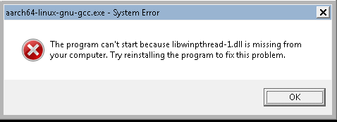

CPU OS Build Support
The Hexagon SDK provides support to build use cases for both Android and Linux--Linux Embedded (LE), Linaro, Ubuntu and OpenWRT--HLOS running on the application processor.
The SDK includes libraries for both Android and Linux variants:
- Libraries for Android variants are located in folders starting with
Android(e.g.,Android_Debug) - Libraries for all supported Linux variants (LE, Linaro, Ubuntu and OpenWRT) are located in folders starting with
Ubuntu(e.g.,Ubuntu_Debug)
For example, see $HEXAGON_SDK_ROOT/ipc/fastrpc/remote/ship to view the libraries available for various OS configurations.
In the remainder of this page, all Linux variants are referred to as Ubuntu.
Cross-compilation tools for Linux are not provided with the Hexagon SDK. This page explains how to download, install, and use these tools to build examples for Ubuntu variants.
Android executables
The focus of this page is to provide support for building SDK examples for Ubuntu variants, because the Hexagon SDK already supports Android natively. For simple step-by-step instructions to build and run an Android executable, see the calculator example instructions. For an example on how to build an Android APK, please refer to the calculator C++ APK example.
Ubuntu executables
This section discusses the steps to cross-compile and build Ubuntu binaries for hard-float ARM ABI or soft-float ARM ABI, using a Windows or Linux machine on which the Hexagon SDK is installed.
Linaro support
The following instructions are for using the gcc-linaro-4.9 tools with which all Hexagon SDK examples are tested.
-
Download the correct version of the tools based on the specified configuration.
Configuration Hard-float ABI Soft-float ABI Windows tools to build 64-bit Linaro i686-mingw32_aarch64-linux-gnu N.A. Windows tools to build 32-bit Linaro i686-mingw32_arm-linux-gnueabihf i686-mingw32_arm-linux-gnueabi Linux tools to build 64-bit Linaro x86_64_aarch64-linux-gnu N.A. Linux tools to build 32-bit Linaro x86_64_arm-linux-gnueabihf x86_64_arm-linux-gnueabi -
Extract the tools under the
$HEXAGON_SDK_ROOT/tools/folder. -
Rename the tools folder as
Linarofor all 32-bit Linaro flavors, orLinaro64for all 64-bit Linaro flavors -
Build your projects with the following commands:
Linaro flavor Hard-float ABI Soft-float ABI 64-bit Linaro make tree V=UbuntuARM_Debug_aarch64make tree V=UbuntuARM_Debug_aarch64 SOFT_FLOAT=132-bit Linaro make tree V=UbuntuARM_Debugmake tree V=UbuntuARM_Debug SOFT_FLOAT=1NOTE:
If you get the following error while building:

Download
libwinpthread-1.dllfrom this location, add the local path to this DLL into your SYSTEM PATH, and try again.
LE and Ubuntu support
For LE and Ubuntu support, follow the same procedure as described for Linaro, with the appropriate tools.
Snap support
A Snap is a package that holds the application along with its dependencies. It can run across Linux distributions without any modifications. Snapcraft is a framework that is used to build Snap. Users can build their own Snap using Snapcraft and publish them to the Snap store. The Snap store provides a place to upload snaps, and for users to browse and install the software they want.
Follow these steps to build snaps from Hexagon SDK.
OpenWRT support
Windows machine
Building OpenWRT binaries is not supported on Windows.
Linux machine
To build 64-bit or 32-bit OpenWRT executables:
-
Follow these instructions to download and build the OpenWRT tools.
-
Copy the tools folder,
toolchain-<architecture>from<QSDK_BUILD_ROOT>/qsdk/staging_dir/to{HEXAGON_SDK_ROOT}/tools/. -
Rename the tools folder as
OpenWRTfor 32-bit OpenWRT flavors, orOpenWRT64for 64-bit OpenWRT flavors.-
For 64-bit Ubuntu binaries, rename the
toolchain-<architecture>folder toOpenWRT64. Then try building withmake tree V=UbuntuARM_Debug_aarch64 OPENWRT=1. -
For 32-bit Ubuntu binaries, rename the
toolchain-<architecture>folder toOpenWRT. Then try building withmake tree V=UbuntuARM_Debug OPENWRT=1.
-
-
Build your projects with
make tree V=UbuntuARM_Debug OPENWRT=1for 32-bit flavors, andmake tree V=UbuntuARM_Debug_aarch64 OPENWRT=1for 64-bit flavors
Run the project
After the Ubuntu binaries are generated, follow the same steps as illustrated in the calculator example for signing, loading, and running the project.